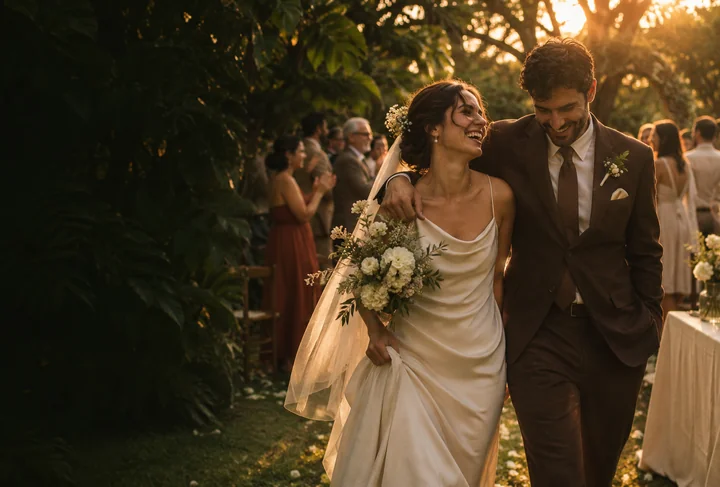

O dia, como
ele foi.
Um casamento no jardim, contado do encontro à última dança.
O jardim
Aconteceu assim.
A luz muda, a mesa ganha gente e a dança começa. A cobertura documental acompanha o intervalo entre essas cenas, onde o dia costuma ficar mais parecido com quem estava ali.
Seu dia já tem uma data?
Também fotografo encontros de família e retratos profissionais. Conte o que você quer guardar.
Vamos conversar sobre as fotos?
Preencha só o que já sabe. A data é uma preferência, e a disponibilidade seria confirmada na conversa.
Seu briefing de teste
- Protocolo
- Sessão
- Preferência
- Data
- Região